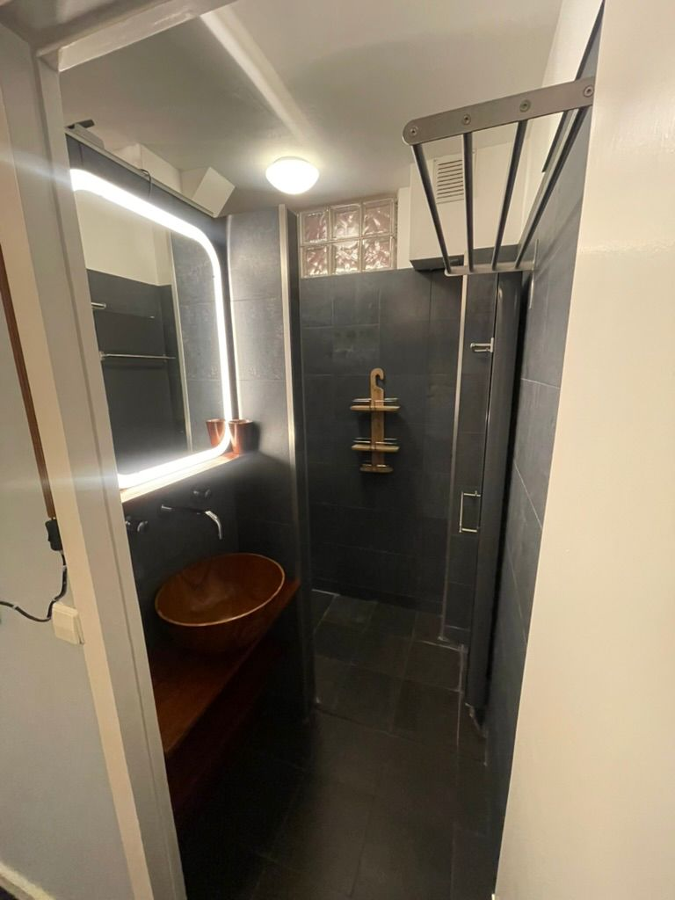
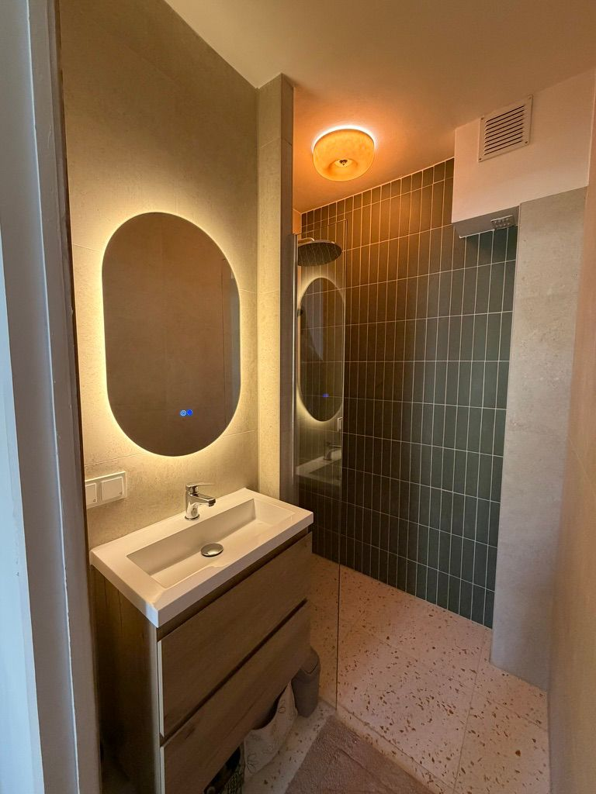
Volledige badkamerrenovatie
ParticulierDemontage, nieuw leidingwerk, tegelwerk en afwerking — van een donkere ruimte naar een warme, lichte badkamer.
Aannemersbedrijf · burgerlijke & utiliteitsbouw
Bouw, renovatie en verbouwing — met eerlijk bouwadvies en begeleiding vooraf. Eén vakman die met u meedenkt én de uitvoering verzorgt, voor particulier en bedrijf.
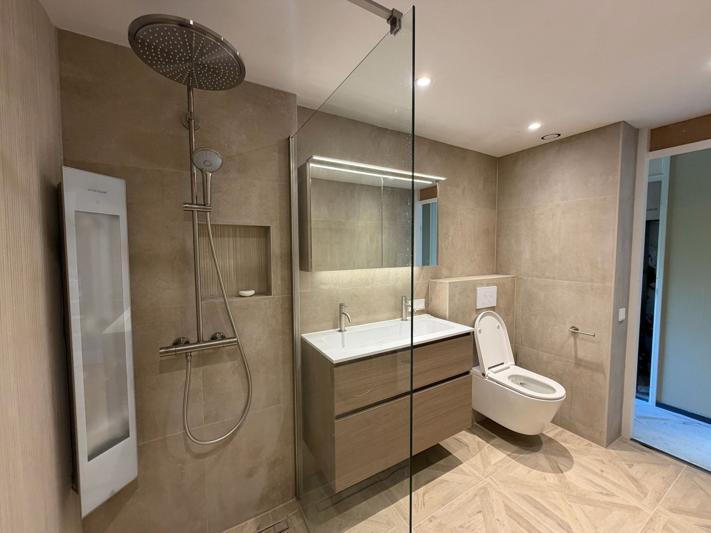
Van woning tot bedrijfspand — degelijk bouwwerk dat jaren meegaat.
Verbouwen, uitbreiden en renoveren met oog voor detail en afwerking.
Bouwadvies en -begeleiding bij uw renovatie of verbouwing, van plan tot oplevering.
Diensten
Of het nu om advies of om de schop in de grond gaat — u zit bij dezelfde mensen aan tafel.
Projecten


Demontage, nieuw leidingwerk, tegelwerk en afwerking — van een donkere ruimte naar een warme, lichte badkamer.
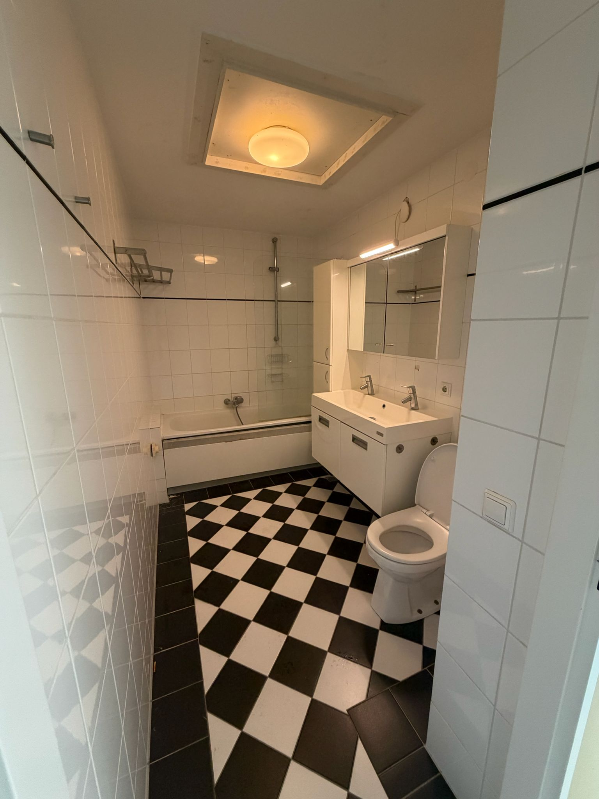
Van een gedateerde ruimte naar een luxe badkamer met inloopdouche, dubbele wastafel en strak tegelwerk.
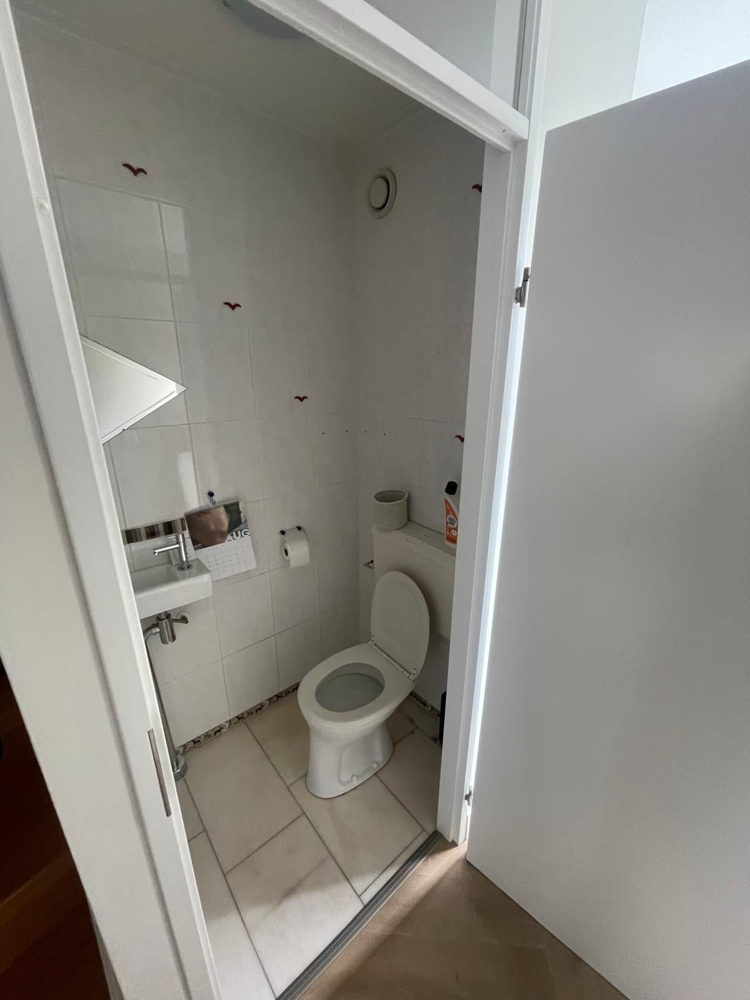
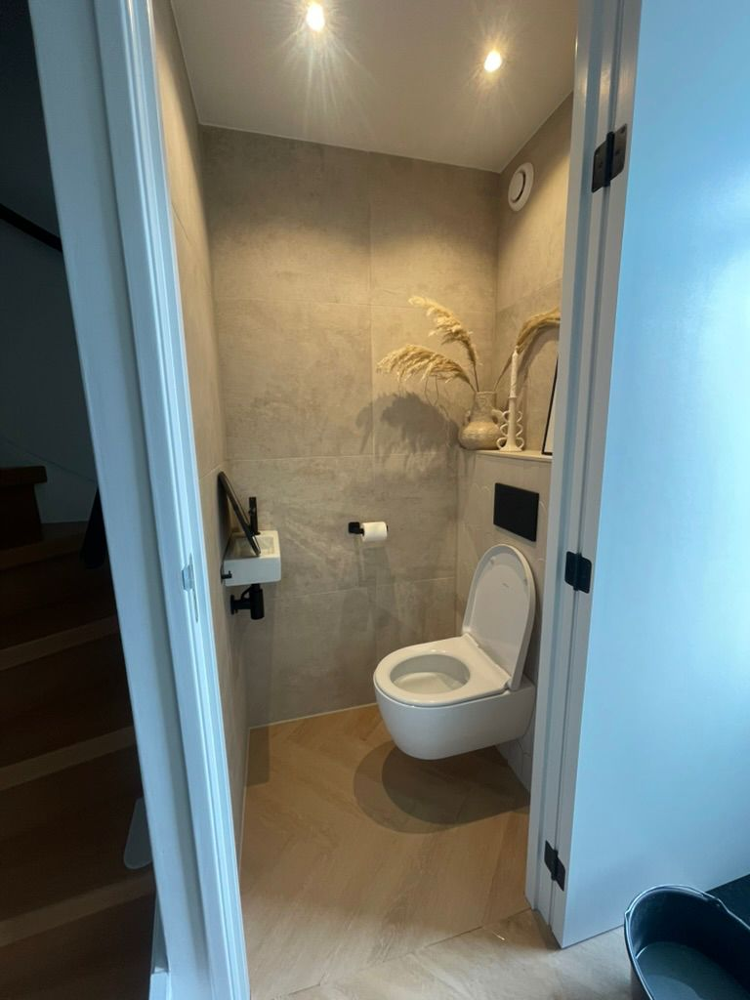
Compleet vernieuwd, met een verlaagd plafond, inbouwspots en een plafondhoge deur.
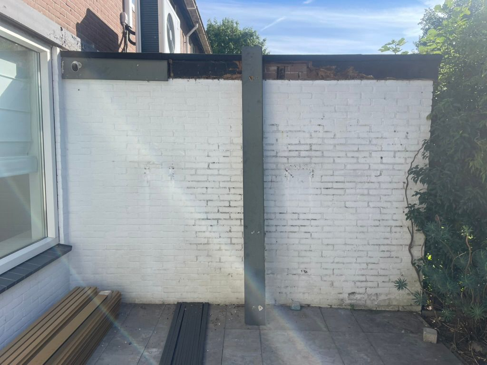
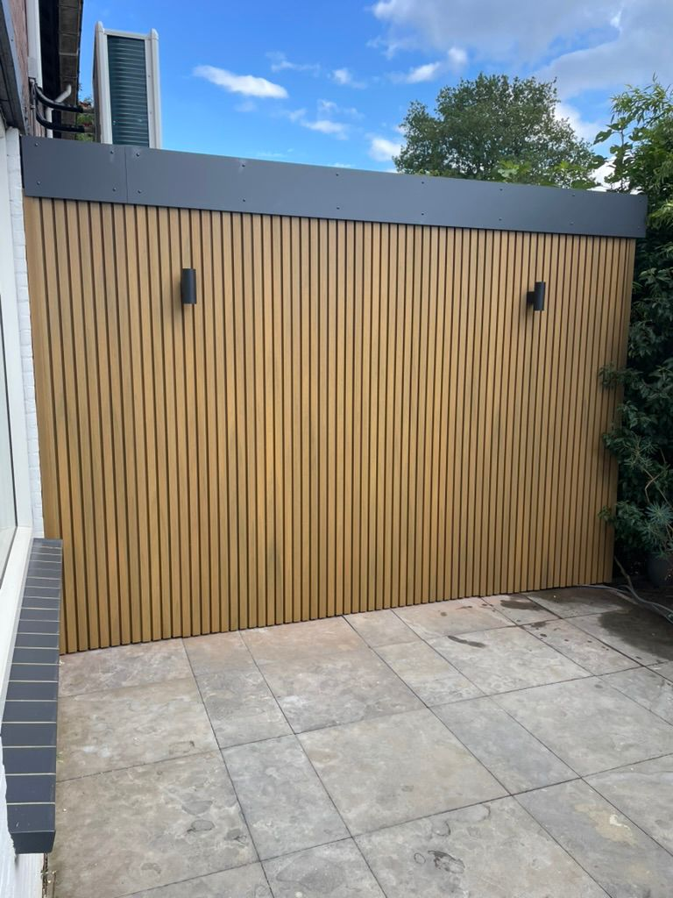
Houtlook gevelbekleding geplaatst, boeideel vernieuwd en nieuwe elektra voor de buitenspots aangelegd.
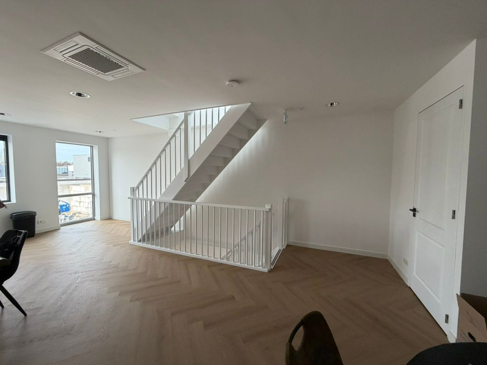
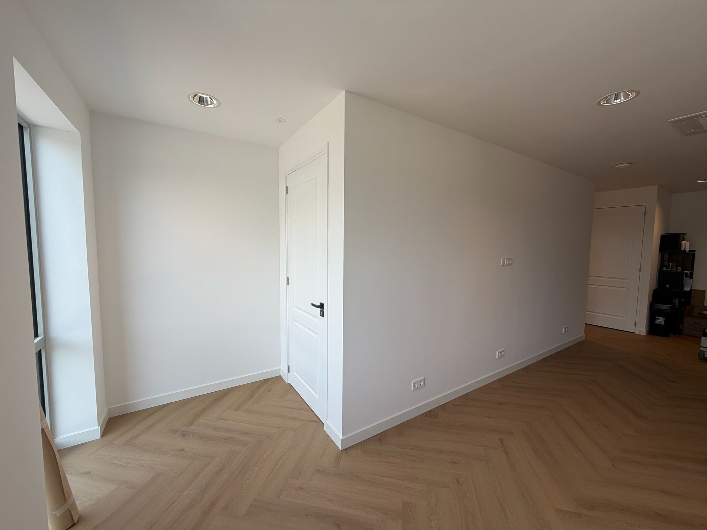
Scheidingswand en trapombouw gerealiseerd, inclusief nieuwe stopcontacten en deuren.
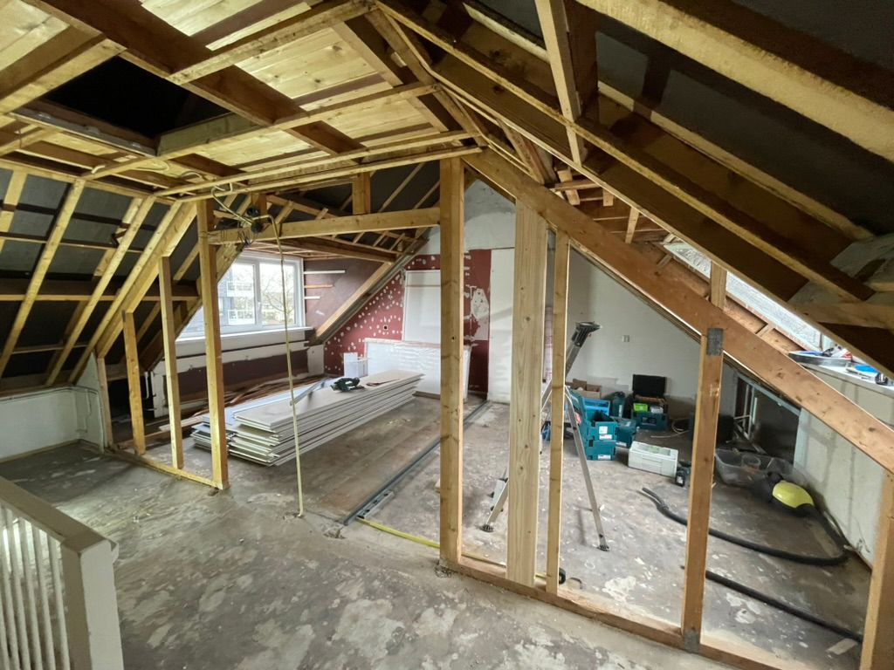
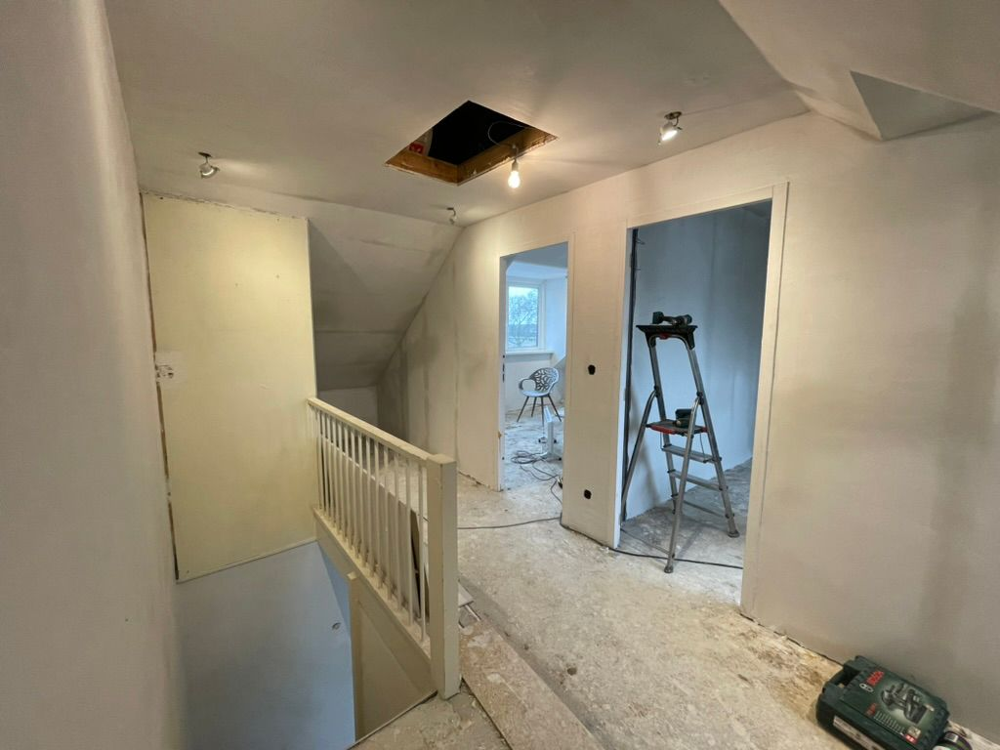
Omgebouwd tot twee ruimtes: geïsoleerd, nieuwe elektra en scheidingswanden met deuren.
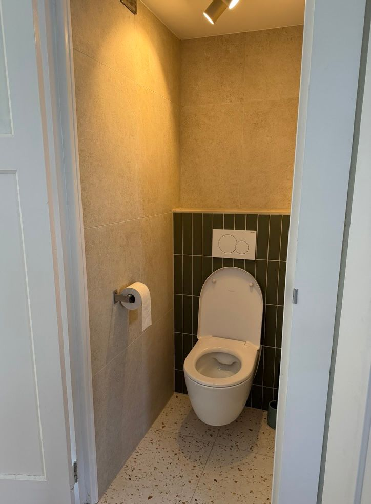
Strak tegelwerk, een zwevend toilet en een terrazzovloer.
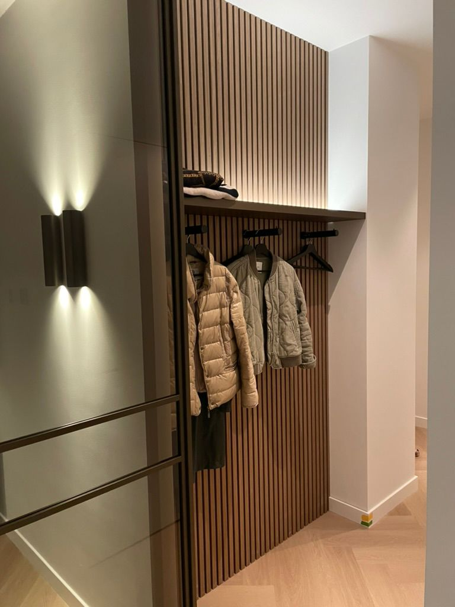
Kapstok, lattenwand en wandplank op maat, met geïntegreerde ledverlichting.
Meer projecten volgen — we vullen deze pagina aan zodra nieuw werk is opgeleverd.
Over Liemen
U krijgt één vast gezicht: dezelfde persoon die het advies geeft, de offerte maakt en straks met de gereedschapskist voor de deur staat. Klein genoeg om u echt te kennen, ervaren genoeg om het goed te doen.
Vanuit Diemen werken we voor particulieren die hun huis willen verbeteren en voor bedrijven die een betrouwbare partner zoeken. Afspraak is afspraak.
Contact
Vrijblijvend kennismaken? We denken graag met u mee over de mogelijkheden.